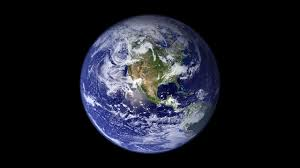

Os planetas do Sistema Solar são, atualmente, oito. Os quais são classificados de acordo com a sua composição em rochosos,ou gasosos.
Planetas Rochosos(terrosos ou telúricos) possuem uma superfície sólida, estrutura formada por rochas em diferentes estados da matéria e ferro abundante. São eles: Mercúrio, Vênus, Terra e Marte.
Planetas Gasosos(jovianos ou gigantes) não possuem superfície sólida, sendo formados essencialmente por um conjunto de gases como hélio e hidrogênio, o que não significa que não tenham elementos sólidos em sua composição, muitos apresentam núcleo solidificado. São planetas gasosos: Júpiter, Saturno, Urano e Netuno.
Todos os planetas do Sistema Solar orbitam em torno da única estrela desse conjunto de astros: o Sol. Os quais estão posicionados na seguinte sequência: Mercúrio – Vênus – Terra – Marte – Júpiter – Saturno – Urano – Netuno.
O menor planeta do Sistema Solar, além de ser aquele cuja órbita é a mais próxima do Sol. Formado por núcleo denso e metálico que ocupa quase 85% de seu volume e por uma superfície rochosa caracterizada por uma série de crateras, como a Lua terrestre. Mercúrio não detém atmosfera, motivo pelo qual as temperaturas variam bruscamente de 430º C durante o dia para -180º C durante a noite. O planeta tem, no entanto, uma exosfera formada por oxigênio, sódio, potássio, hélio e hidrogênio. Um ano neste tem duração de 88 dias terrestres. Não possui aneis nem luas.

Ocupa a segunda órbita a partir do Sol. Com tamanho e estrutura semelhante ao da Terra, Vênus apresenta uma atmosfera densa, composta por elementos como enxofre e dióxido de carbono, que resulta em elevada nebulosidade, efeito estufa denso e tectonismo ativo traduzido em erupções vulcânicas e abalos sísmicos. Por conta disso, esse é o planeta mais quente de todo o Sistema Solar, no qual as temperaturas podem chegar a 70º C na superfície rochosa com variações diárias de 475º C. Um dia neste, dura 243 dias terrestres. Não contém luas, nem aneis.
Terceiro planeta a partir do Sol. As condições de temperatura e pressão criadas com o auxílio da atmosfera gasosa, com elevada composição de água em sua composição, permitiu o desenvolvimento e a manutenção de centenas de milhares de formas de vida no planeta. Assim, esse é o único planeta habitado do Sistema Solar. Além da atmosfera, é formada por uma estrutura rochosa, com superfície sólida e interior pastoso (magma), líquido (parte do núcleo) e também sólido (núcleo). A temperatura média do planeta Terra é de 15º C, e os dias têm duração de 24 horas. Tem apenas um satélite natural: a Lua. 
Ocupa a quarta órbita a partir do Sol. Apresenta um núcleo sólido e manto rochoso formado por elementos como ferro, níquel e enxofre, além de uma crosta de ferro, magnésio, alumínio e outros tipos de minerais. A atmosfera marciana é muito fina comparada à terrestre, tendo, ainda, gases como dióxido de carbono e nitrogênio em sua composição. As temperaturas no planeta variam entre -153º C e 20º C. Com aproximadamente metade do tamanho da Terra, Marte tem rotação que dura cerca de 24,6 horas. Além disso, conta com duas luas.

Ocupa a quinta órbita a partir do Sol. Possui um núcleo interno sólido, formado de ferro e silicatos, cujas temperaturas podem se aproximar de 50.000º C. Ao redor desse núcleo estão líquidos e gases que se mantêm nesse estado por conta da elevada pressão atmosférica. Não possui uma superfície sólida. Tem, essencialmente, a mesma composição do Sol: hélio e hidrogênio, apresentando também metano, amônia e outros gases em menor quantidade. A temperatura média nessa superfície é de -160º C. Possui quatro luas grandes e outras menores, além de aneis formados por pequenas partículas que são pouco visíveis a olho nu.

Ocupa a sexta órbita a partir do Sol. Sua principal característica são os conjuntos de aneis que o circundam, os quais ficam ao redor do seu equador, e são formados por fragmentos de rocha e de gelo que pertenciam a outros corpos celestes. O planeta propriamente dito, entretanto, é formado majoritariamente por gases como hidrogênio, hélio e metano. Ele não dispõe de uma superfície sólida, ao contrário do seu núcleo. As temperaturas médias são baixas, e ficam em torno de -138º C. Conta com mais de 80 luas, entre as quais está Titã, a maior lua do Sistema Solar. O dia em Saturno é curto e tem duração de apenas 10,7 horas terrestres.
Ocupa a sétima órbita a partir do Sol, sendo considerado um dos gigantes de gelo. Isso acontece porque suas temperaturas médias são de -197º C devido à grande distância a que ele está com relação ao Sol: 2,8 bilhões de quilômetros. Assim como os demais planetas gasosos, este não detém uma superfície sólida, mas sim um núcleo solidificado envolto por um conjunto de gases como hidrogênio, hélio e metano. Ademais, sua atmosfera é formada por uma pequena quantidade de água e amônia. Diferente dos demais, entretanto, esse planeta possui uma magnetosfera muito forte, e eixo inclinado em quase 98º com relação ao seu equador. Ao todo, Urano possui 27 satélites naturais e 13 sistemas de anéis que o circundam. Os dias duram, em média, 17,2 horas terrestres.
Ocupa a oitava órbita a partir do Sol. Suas temperaturas médias são de -214º C. Embora seja um planeta frio, a temperatura do seu núcleo chega a 5.000º C. Tanto a atmosfera quanto a superfície(gasosa), possuem a mesma composição, que é feita de hélio, hidrogênio e metano. Os dias neste têm duração aproximada de 16 dias terrestres. O planeta tem, ainda, um conjunto de 14 luas, que se dividem entre regulares e irregulares, além de conjuntos de anéis ao seu redor.
Plutão já foi considerado um planeta do Sistema Solar, porém a União Astronômica Internacional (IAU) reclassificou Plutão como um planeta-anão em 2006.
Com a descoberta do planeta-anão Éris, no ano de 2005, percebeu-se que Plutão não era um corpo celeste de dimensões tais para ter limpado a órbita ao seu redor e exercer dominância na região em que se localiza. Isso porque Éris apresenta tamanho similar ao de Plutão e não tem órbita dominante, o que significa que não existem muitos objetos girando ao seu redor. Tal constatação suscitou debates entre os astrônomos acerca da classificação desses astros. Ficou decidido, então, que Plutão seria reclassificado enquanto um planeta-anão, deixando de ser um planeta propriamente dito.